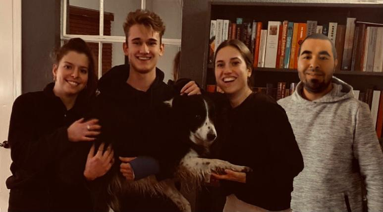

De projectgroep

Mijn projectgroep bestaat uit (volgorde op foto) Rafke Niemans, Sjoerd Meeuwsen, Sanne van den Brink en mijzelf. Vanuit de minor werden wij begeleid door Witek ten Hove. Vanuit TNO werden wij begeleid door Jeroen Broekhuisen.
Kleurentest de Caluwè
Als projectgroep hebben wij ieder individueel de kleurentest van de Caluwè ingevuld. Deze test laat zien wat voor soort veranderaar jij bent als persoon. Het geeft je inzicht in je eigen visie op veranderen. Dit kan bijdragen aan het begrip over je eigen gedrag en opstelling binnen een project. De uitkomsten van de test lieten zien dat ik voornamelijk een groene veranderaar ben, dat is iemand die leren en veranderen als onlosmakelijk met elkaar verbonden ziet. Een organisatie kan zich pas ontwikkelen wanneer mensen zich ontwikkelen. Er word pas iets bereikt als mensen er zelf door kunnen groeien. Bij mijn uitkomsten staat een diepere uitleg over wat de verschillende kleuren betekenen in de test.
Vergeleken met de uitkomsten van mijn groepsgenoten had ik iets anders dan dat zij hadden. Rafke was bijvoorbeeld voornamelijk een blauwe veranderaar. Dat houdt in dat je veranderingen graag van te voren plant en je systematisch en rationeel te werk gaat om de verandering te bewerkstelligen. Sjoerd en Sanne kregen als resultaat uit de test dat zij voornamelijk rode veranderaars zijn. Hierbij draait het vooral om motivatie en is het belangrijk een goede sfeer te hebben om verandering te bewerkstelligen. Dit kwam ook wel redelijk overeen met hoe wij allen in het project zaten. Hoewel verschillend konden wij het goed met elkaar vinden en hebben wij prima samen kunnen werken om het project naar tevredenheid af te ronden.
Team Charter
Tijdens een van de intervisies die wij tijdens de minor hebben gehad, hebben wij een team charter gemaakt. Deze is hieronder te zien. Het teamcharter omvat de volgende aspecten: Lifestyle, Teamculture, Roles en Team management. Deze zal ik hieronder evn verder toelichten.
Lifestyle
In ons team is er een diverse samenstelling van ochtend- en avondmensen. Niet iedereen functioneert het beste op dezelfde tijdstippen en hier dienen we dan ook rekening mee te houden als we gezamenlijk aan het project werken. Het komt dan ook weleens voor dat mensen niet op tijd zijn voor gezamenlijke sessies maar omdat wij dit van elkaar weten zullen we elkaar hier niet op aankijken. Tenzij het natuurlijk te erg word, dan kunnen wij elkaar daar op aanspreken. Het liefst werken wij gezamenlijk in de ochtend of middag aan het project zodat wij onze avonden zelf in kunnen vullen. Ook houden wij allen niet van stress dus zullen wij goed moeten plannen en taken goed moeten verdelen. Mede hierom hebben wij ervoor gekozen om op een aantal vaste dagen in de week samen te komen om aan het project te werken.
Teamculture
Wij allen vinden respect, loyaliteit en discipline belangrijk. Dit zijn dan ook dingen die wij nastreven in ons samenwerken en de omgang met elkaar. Wij zijn eerlijk doch respectvol naar elkaar, helpen elkaar waar nodig en lopen niet de kantjes er van af. Daarnaast vinden wij het belangrijk dat tijdens het werken aan het project er een goede mix is van gezelligheid, concentratie en werkvermogen. Hierdoor zullen wij niet gestrest raken.
Roles
Om de rollen in ons team te bepalen hebben wij allen de Belbin teamrollen test gedaan. Hieruit kwamen verschillende rollen naar voren die wij binnen deze projectgroep bekleden. Door deze informatie over elkaar te weten kunnen wij ook beter omgaan met de dynamiek binnen onze groep. Daarnaast zorgen wij bij meetings dat er altijd iemand is die de notulen maakt terwijl de anderen aan het woord zijn. Deze taakverdeling bij meetings rouleren wij ook zodat iedereen ervan kan leren. Ten slotte hechten wij veel waarde aan het initiatief nemen wanneer dat nodig is. Wij geven elkaar de ruime om input te leveren wanneer iemand dat nodig acht.
Team management
Vooraf hebben wij besproken dat wij conflicten, hoe lastig deze ook kunnen zijn, niet uit de weg zullen gaan. Wij bespreken ergernissen of andere dingen direct met elkaar zonder verwijten te maken. Hierdoor houden wij een gezonde en open werkrelatie. Beslissingen worden eigenlijk altijd in groepsverband genomen en iedereen word geraadpleegd. Deze beslissingen worden dan ook door allen goed onderbouwd. Ten slotte willen wij het project in de juiste richting sturen door een goede afstemming met de opdrachtgever en de docenten. Door goed te luisteren naar hun feedback en deze ook mee te nemen in het vervolg van het project.